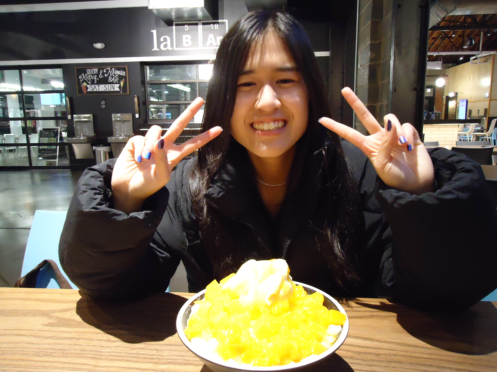

This is an image of me eating mango shaved ice!
Personal Background: Hello! My name is Erica and I'm 19 years old. I have an identical twin sister and we were born and raised in Charlotte, North Carolina. I enjoy playing video games, anything related to music, and learning new languages. I also have 2 dogs, one named Tok-Tok who is a shih-tzu and the other is Apollo who is a husky mix.
Professional Background: I have been working as a barista for about 3 years at Ding Tea. I recently got a job as a teaching assistant for ITSC 2214 this semester. I also have gotten started to do undergraduate research!
Academic Background: I graduated highschool in 2023. I'm currently a sophomore pursuing a Bachelors in Computer Science, concentrating in Cybersecurity, with a minor in Computer Engineering. I also plan on minoring in Japanese soon as well.
Background in this Subject: I'm not super new to all of these topics as I've worked with front end development and building websites. Last semester was the most that I did with front end development for two hackathons I did and we were able to win at both! I'm excited to learn more tricks and things about web development.
Primary Computer Platform: Windows 11 Laptop
Courses I'm Taking & Why:
JAPN 1202 - Elementary Japanese II: I'm interested in learning more Japanese so I can study abroad and finish the minor.
ITIS 3200 - Intro to Info Security & Priv: Required course for cybersecurity.
ITSC 2181 - Introduction to Computer Systems: Required course, it's pretty interesting and is similar to computer engineering.
ITSC 3990 - Undergraduate Research: Required elective course, I chose it because I was interested in doing research.
ITIS 3135 - Web-Based Application Design and Development: Required course, will help with properly learning web design.
Funny/Interesting Item to Remember me by: I love rhythm games, especially Miku!
I'd also like to Share: I'm pretty good at the arcade game Pump it Up.